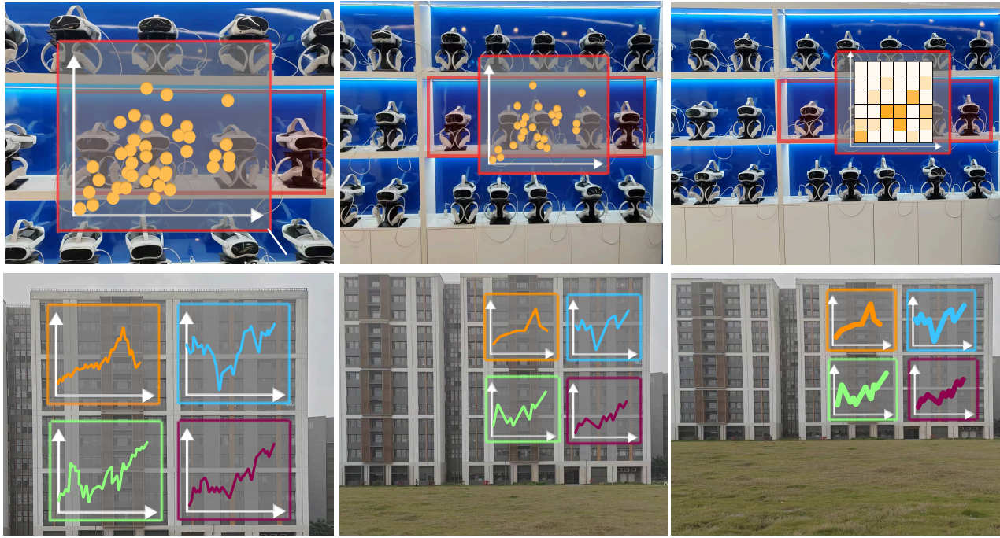
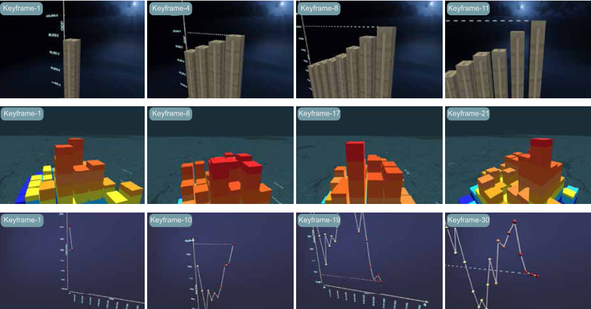
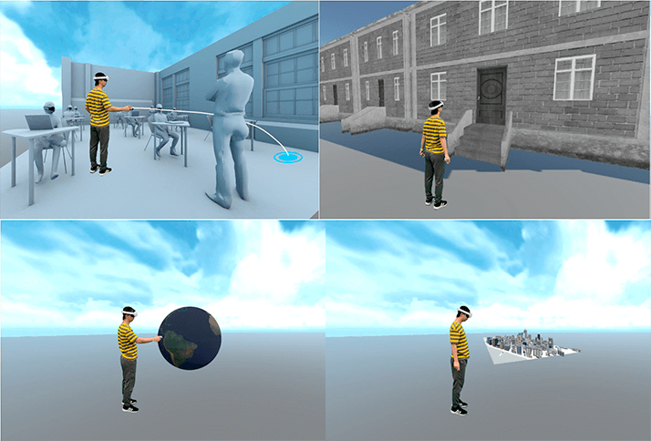
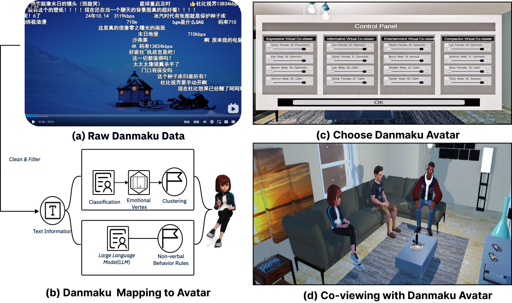
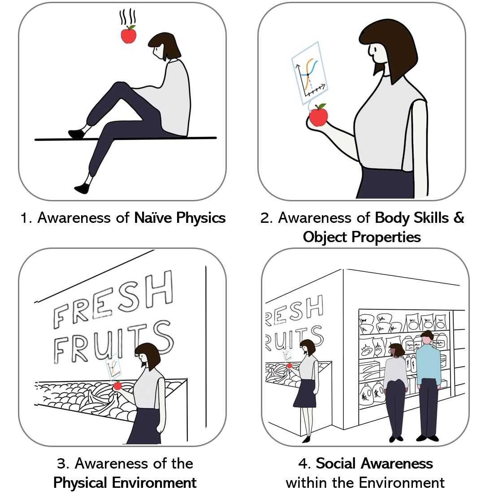
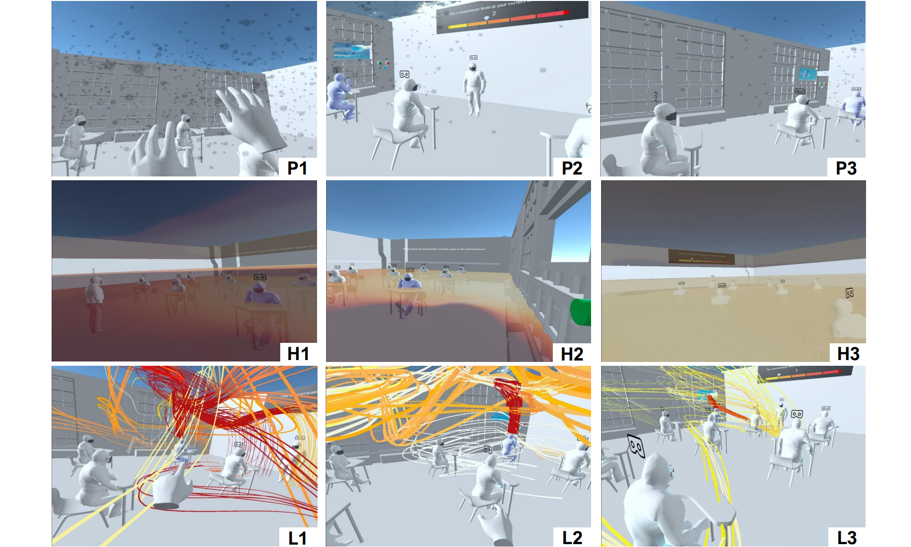
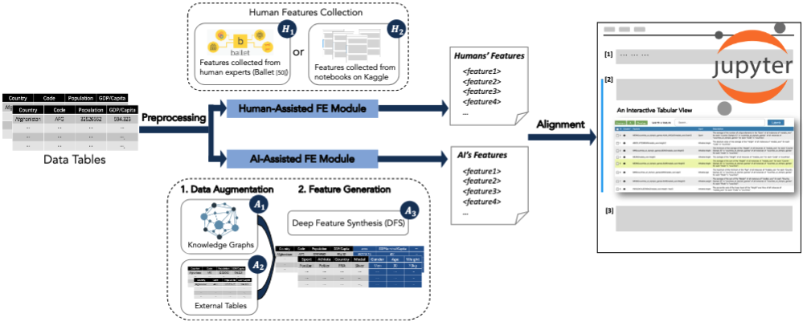
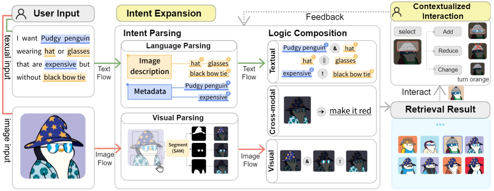
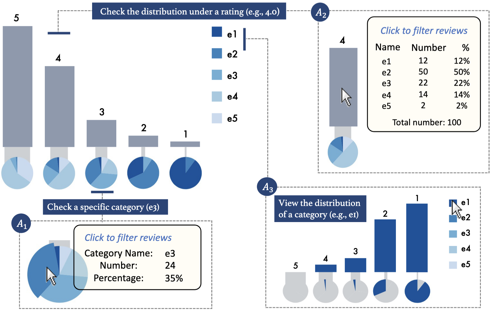

Selected Publications
See DBLP or Google Scholar for a full list.

Less is More Afar: Responsive Design for Situated Visualization Based on Viewing Distance
Virtual Reality 2026
To Appear

CineFolio: Cinematography-guided Camera Planning for Immersive Narrative Visualization
Visual Informatics 2025



Danmaku Avatar: Enabling Asynchronous Co-viewing Experiences in Virtual Reality via Danmaku
ACM CHI 2025 LBW







"Unfold and Go Touch": A Portable Method for Making Existing Touchscreens Accessible to Blind and Low Vision People in Self-Service Terminals
ACM CHI 2023 LBW